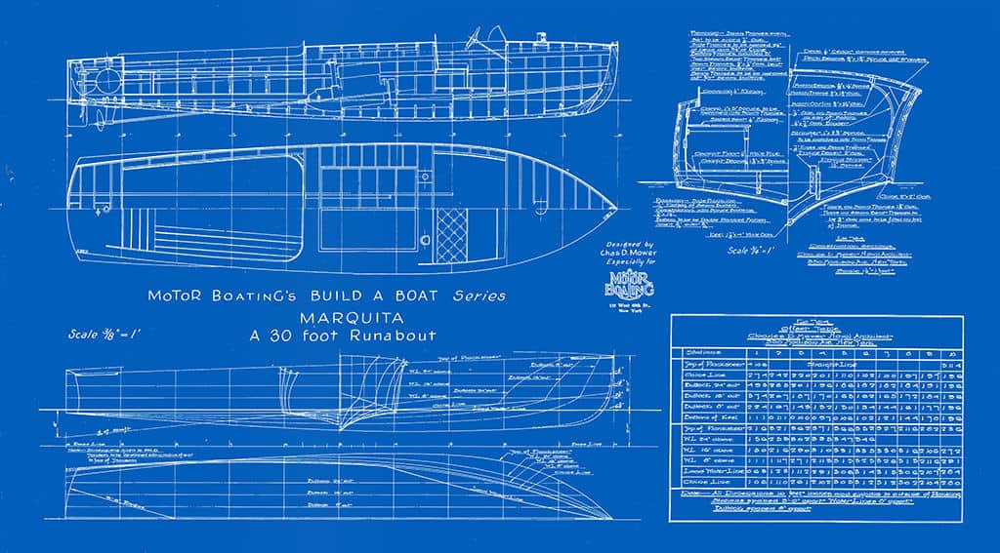

Designing a cargo ship requires detailed planning and careful engineering. Naval architects use computer modeling software to test the stability, strength, and efficiency of a ship before construction begins. The design must ensure the vessel can safely carry thousands of tons of cargo while remaining stable in rough ocean conditions.
Engineers must also consider fuel efficiency and environmental impact. Modern cargo ship designs often include aerodynamic hull shapes and energy efficient engines that reduce fuel consumption. Safety systems such as navigation technology and emergency equipment are also integrated into the design stage.
| component | function |
|---|---|
| hull | main structural body that keeps the ship afloat |
| engine | provides propulsion to move the ship forward |
| bridge | navigation and command center for ship operations |